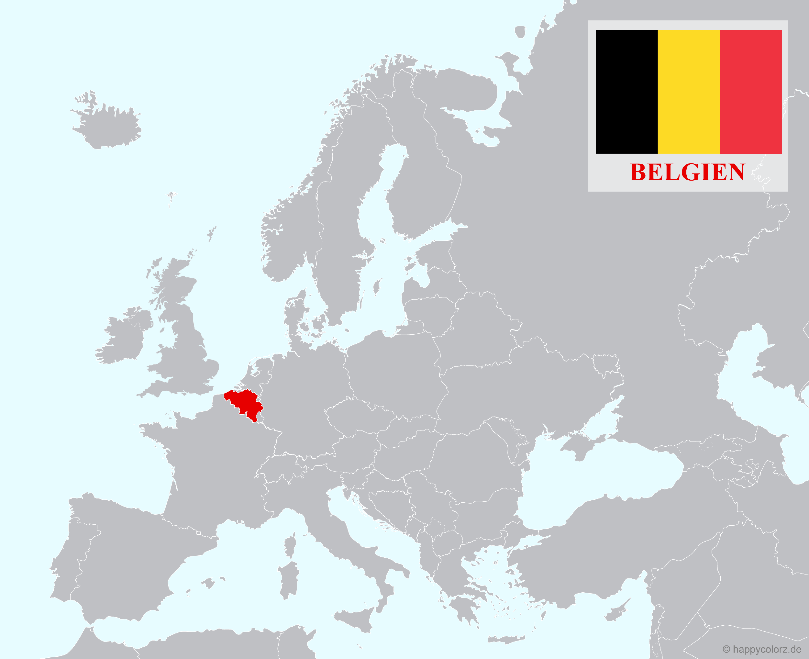
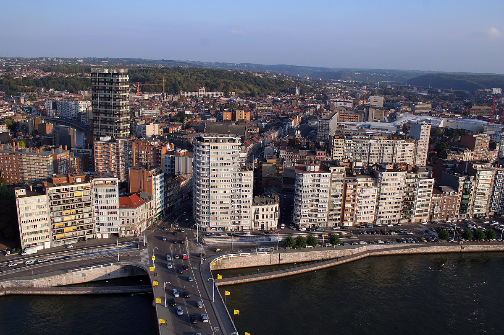

Allgemeine Informationen
Belgien ist ein kleines Land in Westeuropa, bekannt für Schokolade, Biere und Pommes Frites. Brüssel ist die Hauptstadt und ein wichtiges politisches und kulturelles Zentrum mit der Europäischen Union und der NATO. Belgien hat eine reiche Geschichte und Kultur, die sich in Städten, Museen und UNESCO-Weltkulturerbestätten widerspiegelt.

Belgien hat eine Bevölkerung von etwa 11,7 Millionen Menschen und ist damit eines der am dichtesten besiedelten Länder Europas. Die meisten Belgier sprechen entweder Niederländisch, Französisch oder Deutsch als Muttersprache, je nach Region. Das Land ist auch für seine multikulturelle Gesellschaft bekannt, mit einer großen Anzahl von Einwanderern aus verschiedenen Teilen der Welt. Die Lebensqualität in Belgien ist hoch, mit einem starken Sozialsystem, einer guten Infrastruktur und einer florierenden Wirtschaft.

Es grenzt an Frankreich, Deutschland, Luxemburg und die Niederlande. Mit einer Gesamtfläche von etwas mehr als 30.000 Quadratkilometern und einer Bevölkerung von rund 11 Millionen Menschen ist es eines der dicht besiedelten Länder Europas. Das Land ist bekannt für seine Schokolade, Waffeln, Bier und seine politische Bedeutung als Sitz der Europäischen Union.